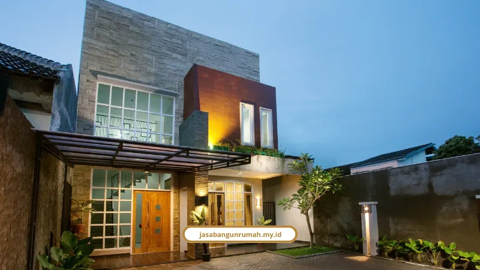

Daftar Isi
Jasa renovasi rumah Jakarta bergaransi mencakup perbaikan atap, peremajaan fasad, dan cat ulang dengan RAB transparan serta jaminan struktur tertulis. Anda tidak perlu was-was soal biaya siluman atau hasil kerja asal jadi.
Rumah yang sudah dihuni belasan tahun di Jakarta biasanya punya masalah serupa. Atap mulai bocor pas musim hujan datang. Fasad depan terlihat kusam dan ketinggalan zaman. Dinding lembap, mengelupas, bahkan berjamur di beberapa sudut.
Masalahnya, banyak orang trauma dengan pengalaman renovasi sebelumnya. Kontraktor nakal, biaya membengkak di tengah jalan, atau pengerjaan molor tanpa kabar jelas.
Makanya penting memilih penyedia jasa yang punya kantor fisik jelas, RAB terbuka, dan garansi tertulis setelah pekerjaan selesai.
Berapa Estimasi Biaya Renovasi Atap Rumah di Jakarta?
Estimasi biaya renovasi atap rumah di Jakarta berkisar Rp 250.000 sampai Rp 750.000 per meter persegi, tergantung apakah hanya ganti genteng, ganti rangka, atau keduanya sekaligus.
Rincian per jenis pekerjaan atap:
- Penggantian genteng saja: Rp 100.000 - Rp 200.000 per m²
- Ganti rangka baja ringan saja: Rp 250.000 - Rp 450.000 per m²
- Rangka baja ringan lengkap dengan penutup dan jasa: Rp 400.000 - Rp 600.000 per m²
- Meninggikan atap/plafon untuk sirkulasi udara: Rp 500.000 - Rp 900.000 per m²
Sebagai simulasi, rumah tipe 36 dengan luas atap sekitar 60 meter persegi dikali Rp 300.000 per m² menghasilkan estimasi Rp 18.000.000. Sedangkan rumah tipe 45 dengan luas atap sekitar 75 meter persegi bisa mencapai Rp 22.500.000.
Baja ringan kami rekomendasikan karena tahan rayap, konstruksinya lebih stabil, dan proses pemasangannya jauh lebih cepat dibanding kayu konvensional.
Kenapa Fasad Modern Tropis Jadi Pilihan Renovasi Terbaik di Jakarta?
Fasad modern tropis jadi pilihan terbaik karena mengombinasikan bentuk geometris bersih dengan material alami yang membuat rumah lebih adem sekaligus sesuai aturan efisiensi energi DKI Jakarta.
Teguh Aryanto, Ketua Ikatan Arsitek Indonesia Jakarta, menyebut bentuk bangunan modern tropis masih jadi tren yang berlanjut sepanjang tahun 2026. Denny Setiawan, arsitek yang fokus pada desain iklim, menambahkan bahwa desain rumah 2026 berfokus pada efisiensi energi lewat:
- Bukaan maksimal dan pintu kaca geser atau lipat lebar
- Atap bertritisan lebar untuk menghalau tempias hujan dan terik matahari
- Palet warna alami atau earth tone dengan tekstur kayu dan beton
Untuk material penolak panas, beberapa pilihan yang kami tangani antara lain kayu keras seperti ulin dan bengkirai, fiber cement, WPC, batu alam andesit, terracotta, sampai ACP dan GRC untuk gaya double skin yang menciptakan rongga sirkulasi udara.
Ada juga aturan resmi yang perlu diperhatikan. Pergub DKI Jakarta No. 5 Tahun 2026 mendorong pemilik bangunan menerapkan efisiensi energi, salah satunya dengan memilih warna cat bernilai Solar Reflectance Index atau SRI tinggi supaya radiasi matahari lebih banyak dipantulkan.
Kalau rumah Anda sedang tahap perencanaan awal dan belum punya gambar teknis fasad yang matang, kami juga menyediakan jasa arsitek untuk membantu menyusun konsep dari nol.

Perubahan paling terlihat biasanya ada pada fasad rumah dan sistem pelindung atap. Jika bagian atas rumah sudah bocor, lihat dulu estimasi yang dibahas di Estimasi Biaya Renovasi Atap Rumah agar Anda tidak membayar lebih dari kebutuhan.
Untuk area yang mulai lembap dan berjamur, segera cek cara mengatasi dinding lembab dan berjamur sebelum kondisi makin merusak struktur dan finishing interior.
Bagaimana Standar Pengecatan Ulang Rumah yang Benar?
Standar pengecatan ulang rumah yang benar dimulai dari pembersihan permukaan, pengerokan cat lama yang mengelupas, perbaikan retak halus dengan plamir, lalu aplikasi cat dasar sebelum minimal dua lapis cat akhir.
Tahapan ini penting supaya warna rata dan menutup sempurna, bukan sekadar dicat tumpang tindih di atas cat lama yang sudah rusak. Cat ulang juga bermanfaat untuk melindungi dinding dari kelembapan serta mencegah jamur dan retak rambut.
Estimasi biaya borongan pengecatan di Jakarta tahun 2026:
- Kualitas standar: Rp 30.000 - Rp 40.000 per m²
- Kualitas premium: Rp 40.000 - Rp 50.000 per m²
- Cat merek ternama seperti Dulux, Mowilex, Vinilex, Catylac: Rp 45.000 - Rp 70.000 per m² sudah termasuk bahan dan tukang
Berapa Kisaran Biaya Renovasi Rumah Secara Keseluruhan di Jakarta?
Kisaran biaya renovasi rumah secara keseluruhan di Jakarta dibagi tiga tingkat, mulai dari Rp 500.000 sampai Rp 6.000.000 per meter persegi, tergantung skala pekerjaan yang dilakukan.
- Renovasi Ringan (cat, ganti keramik, perbaikan plafon): Rp 500.000 - Rp 2.500.000 per m²
- Renovasi Sedang (ubah layout, ganti pintu/jendela, struktur ringan): Rp 1.500.000 - Rp 3.500.000 per m²
- Renovasi Berat/Total (bongkar total, tambah lantai, suntik fondasi): Rp 3.500.000 - Rp 6.000.000 per m²
Kami juga memberi kejelasan soal masa pemeliharaan. Defect Liability Period berlangsung 3 sampai 6 bulan sejak serah terima kunci pertama untuk perbaikan cacat minor seperti finishing, kebocoran kecil, cat belang, atau keramik kopong, tanpa biaya tambahan.
Sementara garansi struktur berlaku 1 sampai 5 tahun untuk elemen vital seperti fondasi, kolom, balok, dan pelat lantai.
Kalau kebutuhan Anda ternyata lebih besar dari sekadar renovasi rumah tinggal, misalnya menyangkut bangunan komersial atau ruko, kami juga melayani jasa renovasi bangunan gedung secara menyeluruh.
Pembahasan lengkap soal seluruh tahapan konstruksi, mulai dari pekerjaan sipil sampai full finishing, sudah kami rangkum di layanan kontraktor rumah yang bisa jadi referensi tambahan.
Kenapa Harus Renovasi di Jasa Bangun Rumah?
Renovasi rumah di Jasa Bangun Rumah layak dipilih karena kami sudah berpengalaman sejak 2010, menyelesaikan 250+ proyek, dan memberikan garansi pengerjaan serta garansi struktur tertulis untuk setiap klien.
Beberapa jaminan yang Anda dapat:
- Survei dan asesmen awal kondisi bangunan sebelum pekerjaan dimulai
- RAB transparan tanpa biaya tersembunyi
- Material berkualitas standar SNI dan ramah lingkungan
- Pendampingan perizinan PBG untuk renovasi yang mengubah struktur
- Garansi pengerjaan dan garansi struktur setelah serah terima
Budi Santoso, klien rumah tinggal kami, bercerita proses pembangunan rumahnya berjalan rapi dengan kabar perkembangan proyek yang rutin. Siti Aminah, pemilik ruko, mengaku renovasi rukonya selesai lebih cepat dari jadwal berkat RAB transparan sejak awal tanpa biaya tak terduga.
Rumah Lama Bukan Berarti Harus Dijual
Atap bocor, fasad kusam, atau cat mengelupas bukan alasan untuk pindah rumah. Dengan penanganan yang tepat, sistematis, dan bergaransi, rumah lama Anda bisa tampil seperti baru tanpa drama proyek molor atau biaya bengkak.
Jasa Bangun Rumah siap membantu renovasi atap, fasad, sampai cat ulang untuk wilayah Jakarta Selatan, Barat, Timur, Utara, Pusat, dan Jabodetabek, dengan RAB transparan dan garansi struktur tertulis.
Jadwalkan survei lokasi gratis sekarang juga melalui WhatsApp 0889-8964-3555 atau kunjungi jasabangunrumah.my.id untuk konsultasi renovasi rumah Anda.